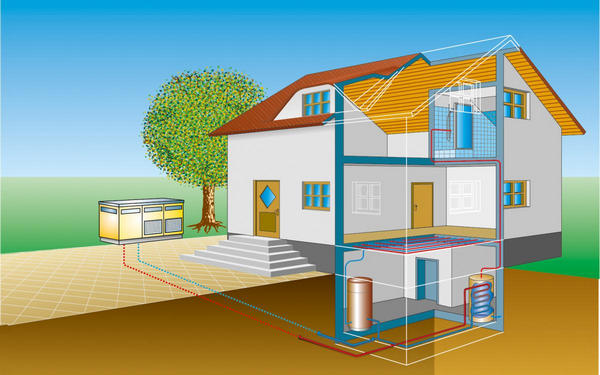
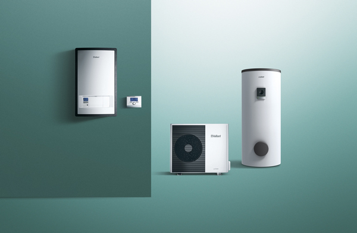
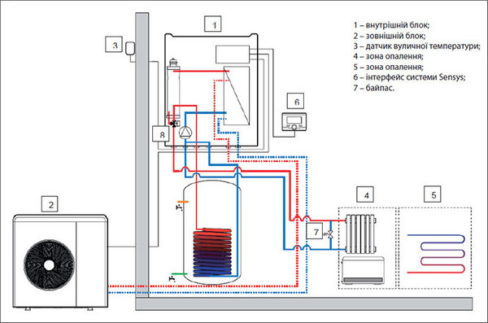

Що таке тепловий насос?
Історія виникнення
Концепцію теплових насосів було розроблено ще в 1852 британським фізиком та інженером Вільямом Томсоном (Лордом Кельвіном) і в подальшому вдосконалено та деталізовано австрійським інженером Петером фон Ріттінгером. Петера Ріттера фон Ріттінгера вважають винахідником теплової помпи, від'як саме він спроектував і встановив першу відомий теплову помпу у 1855 році.
Практичного застосування теплові помпи набули значно пізніше, а саме у 40-х роках XX сторіччя, коли винахідник-ентузіаст Роберт Вебер (Robert C. Webber) експериментував з морозильною камерою. Одного разу Вебер випадково доторкнувся до гарячої труби на виході камери і зрозумів, що тепло просто викидається назовні.
Винахідник замислився над тим, як використати це тепло, — і вирішив помістити трубу в бойлер для підігріву води. У результаті Вебер забезпечив свою родину такою кількістю гарячої води, що її вони просто не могли використати, — і при цьому частина тепла потрапляла у повітря. Це наштовхнуло його на думку, що від одного джерела тепла можна підігрівати і воду, і повітря одночасно: Вебер удосконалив свій винахід і почав проганяти гарячу воду по спіралі (через змійовик) і за допомогою невеликого вентилятора розповсюджувати тепло по будинку з метою його опалення.
Склад теплової помпи
Внутрішній контур теплових насосів:
- Конденсатор;
- Дросель;
- Випарник;
- Компресор, що працює від електричної мережі;
- Терморегулятор, який управляє обладнанням;
- Холодоаґент.
Принцип роботи
Холодоагент під високим тиском крізь капілярний отвір потрапляє до випарника, де за рахунок зниження тиску відбувається процес випарювання.
Разом з цим холодоагент забирає тепло у внутрішніх стінок випарника. Випарник у свою чергу відбирає тепло в повітряного, ґрунтового або водяного контуру, за рахунок чого повітря, ґрунт чи вода постійно охолоджується. Компресор вбирає холодоагент із випарника, стискає його, за рахунок чого температура холодоагенту різко підвищується й виштовхує в конденсатор.
Крім цього, у конденсаторі, нагрітий у результаті стиску холодоагент віддає тепло (температура порядку 85-125 градусів Цельсія) опалювальному контуру й переходить у рідкий стан. Процес повторюється постійно.
Коли температура досягає необхідного рівня, електричне коло розривається терморегулятором і тепловий насос перестає працювати. Коли температура в опалювальному контурі падає, терморегулятор знову запускає теплова помпа. У такий спосіб холодоаґент і тепловий насос робить замкнутий цикл Карно.
Теплові насоси здатні не тільки опалювати приміщення, але й забезпечувати гаряче водопостачання, а також здійснювати кондиціювання повітря. Але при цьому в теплових насосах повинен бути реверсивний клапан, саме він дозволяє тепловій помпі працювати у зворотному режимі.
Типи теплових помп
Залежно від джерела відбору тепла теплові помпи поділяються:
- Повітряні
- Грунтові
- Водні
Переваги теплових насосів
Широкий спектр застосування. Земля, повітря та вода містять в собі теплову енергію, отриману від сонця. Теплові насоси зберуть це тепло. Усе що потрібно для цього — електрична енергія. Деякі моделі теплових насосів можуть застосовувати паливо для своєї роботи.
Екологічність. Тепловий насос не тільки заощаджує гроші, але й береже здоров'я власникам будинку. Універсальність. Теплові помпи, обладнані реверсним клапаном, працюють як на опалення, так і на охолодження.
Безпека. Сучасні теплові насоси вибухово- і пожежобезпечні. В процесі нагрівання води та опалення відсутні небезпечні гази, відкритий вогонь або шкідливі суміші. Деталі теплового насосу не нагріваються до високих температур, здатних стати причиною пожеж.
Чим більші потреби в теплі, тим доцільніше використання теплових насосів:
по-перше, питома вартість для теплових насосів великої потужності (вартість встановленого кВт) в 3…5 разів нижче, ніж для ТН малої потужності; а по-друге, чим більші обсяги споживання теплоти, тим більша економія від застосування ТН в абсолютному вимірі.
Головне джерело тепла для роботи усіх теплових насосів — сонячна радіація, оскільки Земна радіація в 5000 разів менша. Головний теплоносій — вода, яка й зумовлює теплопровідність повітря і ґрунту. Вода має більшу від повітря теплопровідність приблизно в 20 разів, а теплоємність — в 3100 разів.
Повернутися до змісту